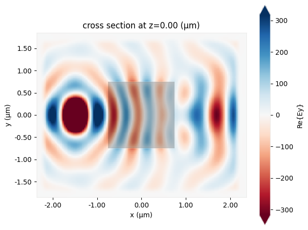

# import packages and authenticate (if needed)
import matplotlib.pylab as plt
import numpy as np
import tidy3d as td
import tidy3d.web as web
# web.configure("YOUR API KEY GOES HERE")Quickstart
This is a minimal Tidy3D script showing the FDTD simulation of a dielectric cube in the presence of a point dipole.
Before running this notebook, make sure to have:
First, we use the convenience class FreqRange to define the basic frequency-related parameters of the simulation.
lda0 = 0.75 # wavelength of interest (length scales are micrometers in Tidy3D)
freq0 = td.C_0 / lda0 # frequency of interest
fwidth = freq0 / 10.0 # desired freq. bandwidth
freq_range = td.FreqRange(freq0=freq0, fwidth=fwidth) # set frequency rangeCreate a Structure from a Geometry like this rectangular prism Box and assign a Medium to represent its optical properties.
square = td.Structure(
geometry=td.Box(center=(0, 0, 0), size=(1.5, 1.5, 1.5)), medium=td.Medium(permittivity=2.0)
)Create a Source. In this case, it is a PointDipole, which is a uniform current source with a zero size.
# create source
source = td.PointDipole(
center=(-1.5, 0, 0), # position of the dipole
source_time=freq_range.to_gaussian_pulse(), # time profile of the source
polarization="Ey", # polarization of the dipole
)Create a Monitor like a FieldMonitor to record electromagnetic fields in the frequency domain at freq0.
# create monitor
monitor = td.FieldMonitor(
center=(0, 0, 0), # center of the monitor
size=(td.inf, td.inf, 0), # size of the monitor
freqs=freq_range.freqs(num_points=1), # frequency points to record the fields at
name="fields",
)All these components are used to create a Tidy3D Simulation:
sim = td.Simulation(
size=(4, 3, 3), # simulation domain size
grid_spec=td.GridSpec.auto(
min_steps_per_wvl=25
), # automatic nonuniform FDTD grid with 25 grids per wavelength in the material
structures=[square],
sources=[source],
monitors=[monitor],
run_time=3e-13, # physical simulation time in second
)# visualize in 3D
sim.plot_3d()print(
f"simulation grid is shaped {sim.grid.num_cells} for {int(np.prod(sim.grid.num_cells) / 1e6)} million cells."
)simulation grid is shaped [179, 147, 147] for 3 million cells.The python web API is used to run your simulation quickly in the cloud. The output data is stored in a SimulationData container.
# run simulation
data = td.web.run(sim, task_name="quickstart", path="data/data.hdf5", verbose=True)11:27:54 EDT Created task 'quickstart' with task_id 'fdve-08497039-7352-4e15-9249-73b62fad435c' and task_type 'FDTD'.
View task using web UI at 'https://tidy3d.simulation.cloud/workbench?taskId=fdve-08497039-735 2-4e15-9249-73b62fad435c'.
Task folder: 'default'.
11:28:00 EDT Maximum FlexCredit cost: 0.025. Minimum cost depends on task execution details. Use 'web.real_cost(task_id)' to get the billed FlexCredit cost after a simulation run.
status = success
11:28:03 EDT loading simulation from data/data.hdf5
# see the log
print(data.log)[02:49:23] INFO: Auto meshing using wavelength 0.7575 defined from sources.
INFO: Auto meshing using wavelength 0.7575 defined from sources.
USER: Simulation domain Nx, Ny, Nz: [179, 147, 147]
USER: Applied symmetries: (0, 0, 0)
USER: Number of computational grid points: 4.0184e+06.
USER: Subpixel averaging method: SubpixelSpec(attrs={},
dielectric=PolarizedAveraging(attrs={}, type='PolarizedAveraging'),
metal=Staircasing(attrs={}, type='Staircasing'),
pec=PECConformal(attrs={}, type='PECConformal',
timestep_reduction=0.3), lossy_metal=SurfaceImpedance(attrs={},
type='SurfaceImpedance', timestep_reduction=0.0),
type='SubpixelSpec')
USER: Number of time steps: 7.5090e+03
USER: Automatic shutoff factor: 1.00e-05
USER: Time step (s): 3.9959e-17
USER:
USER: Compute source modes time (s): 0.0545
[02:49:24] USER: Rest of setup time (s): 0.5844
[02:49:26] USER: Compute monitor modes time (s): 0.0001
[02:49:29] USER: Solver time (s): 2.2550
USER: Time-stepping speed (cells/s): 3.56e+09
USER: Post-processing time (s): 0.2103
====== SOLVER LOG ======
Processing grid and structures...
Building FDTD update coefficients...
Solver setup time (s): 0.5530
Running solver for 7509 time steps...
- Time step 300 / time 1.20e-14s ( 4 % done), field decay: 1.00e+00
- Time step 501 / time 2.00e-14s ( 6 % done), field decay: 1.00e+00
- Time step 600 / time 2.40e-14s ( 8 % done), field decay: 4.89e-01
- Time step 901 / time 3.60e-14s ( 12 % done), field decay: 3.16e-03
- Time step 1201 / time 4.80e-14s ( 16 % done), field decay: 7.81e-05
- Time step 1501 / time 6.00e-14s ( 20 % done), field decay: 2.71e-06
Field decay smaller than shutoff factor, exiting solver.
Time-stepping time (s): 1.6936
Data write time (s): 0.0081
This monitor data can be easily plotted through available plot methods. You can also save, modify, and custom plot the raw FieldData and more.
# plot the field data stored in the monitor
ax = data.plot_field("fields", "Ey", z=0)
See all our examples to help you with your own designs!